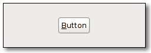

| GIMP Widgets Library Reference Manual |
|---|
GimpButtonGimpButton — A GtkButton with a little extra functionality. |
 |
GimpButton;
GtkWidget* gimp_button_new (void);
void gimp_button_extended_clicked (GimpButton *button,
GdkModifierType state);
GObject +----GtkObject +----GtkWidget +----GtkContainer +----GtkBin +----GtkButton +----GimpButton +----GimpColorButton
"extended-clicked" void user_function (GimpButton *gimpbutton, GdkModifierType arg1, gpointer user_data);
GimpButton adds an extra signal to the GtkButton widget that allows to distinguish a normal click from a click that was performed with modifier keys pressed.
GtkWidget* gimp_button_new (void);
Creates a new GimpButton widget.
| Returns : | A pointer to the new GimpButton widget. |
void gimp_button_extended_clicked (GimpButton *button, GdkModifierType state);
Emits the button's "extended_clicked" signal.
button : |
a GimpButton. |
state : |
a state as found in GdkEventButton->state, e.g. GDK_SHIFT_MASK. |
void user_function (GimpButton *gimpbutton, GdkModifierType arg1, gpointer user_data);
gimpbutton : |
the object which received the signal. |
arg1 : |
the state of modifier keys when the button was clicked |
user_data : |
user data set when the signal handler was connected. |
| << GimpBrowser | GimpChainButton >> |